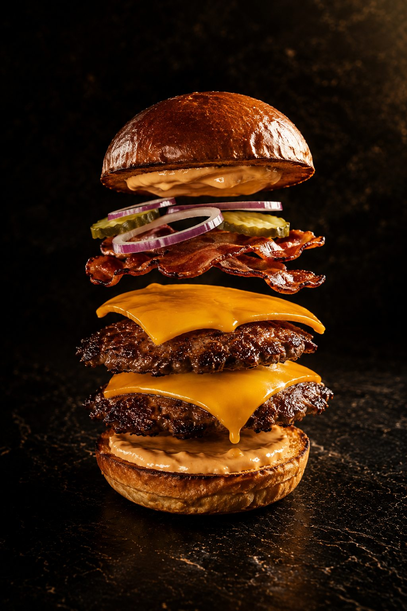
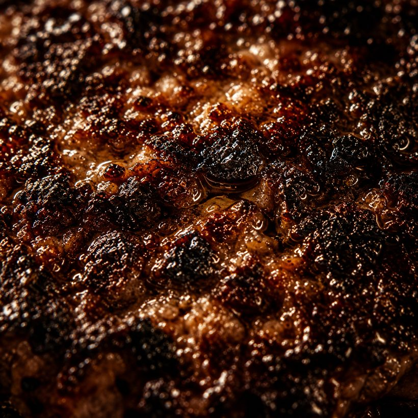
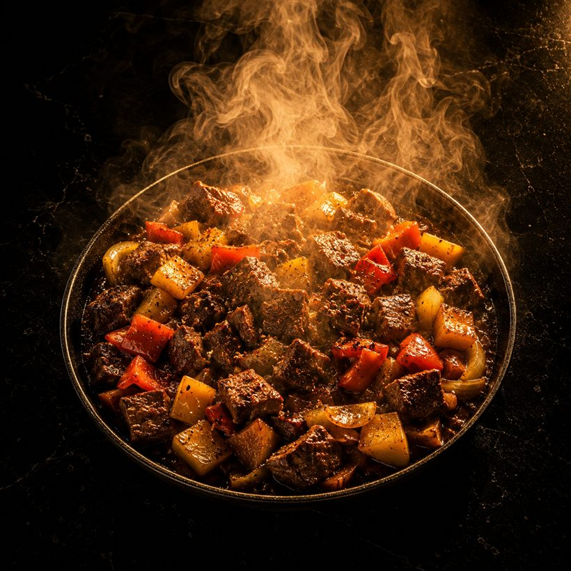
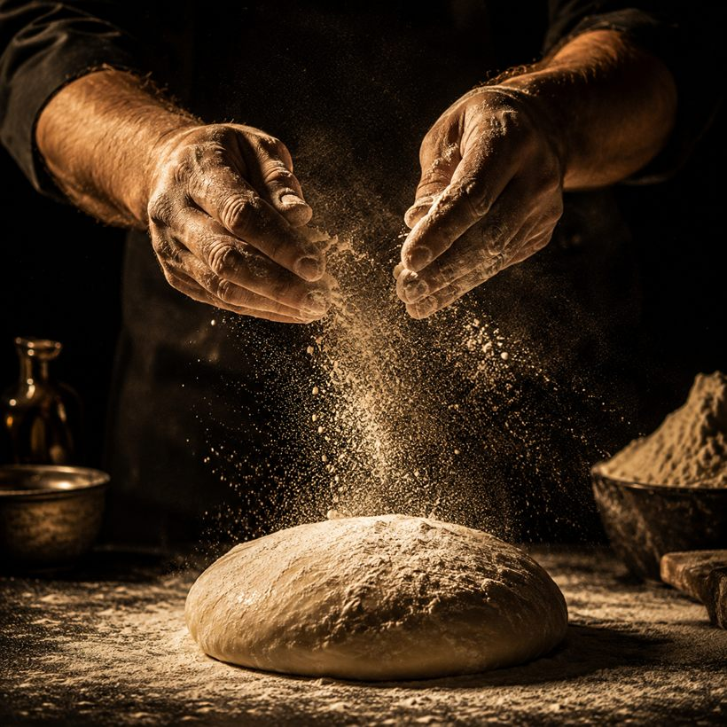
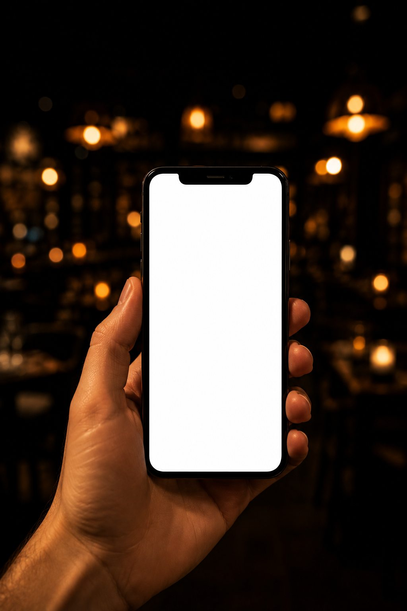

What we do
Four parts,
one system.
We rebuild the menu on the McDonald's principle
Only the most wanted and most profitable items go to online sales. A long list forces the customer to choose and hesitate — a few items are remembered by heart and ordered again. You sell high-margin product, not everything to everyone.
We produce premium content for sales and social media
Professional photo and video that build trust and sell. The same material runs your social media accounts — the quality large chains buy from agencies at many times the price.
We deploy an AI agent in the role of a salesperson
The agent handles communication with your customer base, tells them about offers, activates repeat purchases and brings customers back. It works around the clock and takes no holidays.
We release an app for your customers
Your own ordering channel that takes orders and manages the customer relationship automatically. The customer orders by speaking one sentence — no browsing, no forms.


This is what the menu looks like rebuilt: four items instead of twenty-six. The selection is made from your own sales statistics — popularity, margin and how well an item survives delivery. The rest stays in the dining room; only what sells and travels goes online.
Content that sells
The same kitchen produces the material that also runs your social media — macro, motion, hands, texture. Not one lucky photograph, but the whole range.



An app for your customers
The customer says one sentence — the system assembles the order, reads it back and confirms. No browsing, no forms.

Your own channel does not lose on price — it loses on effort
The platform remembers the customer's address and card. Your own page starts from zero every time: browse, choose, type the address, type the phone. Ten steps against one.
Voice removes that gap completely. Nothing has to be remembered in advance, because saying it is faster than recalling it.
- The order is always read back before confirmation
- If the audio is unclear, the system asks to repeat or offers typing instead
- Recognises a returning customer: “The same as last time?”